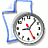
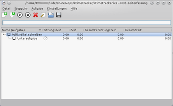

KTimeTracker
Dieser Artikel wurde für die folgenden Ubuntu-Versionen getestet:
Ubuntu 14.04 Trusty Tahr
Zum Verständnis dieses Artikels sind folgende Seiten hilfreich:

KTimeTracker  ist die Aufgabenmanagement- und Zeiterfassungsanwendung von KDE und bis Ubuntu 13.04 Teil der KDE-PIM-Suite Kontact. In nachfolgenden Ubuntuversionen ist das Programm ausschließlich als eigenständiges Programm verwendbar.
ist die Aufgabenmanagement- und Zeiterfassungsanwendung von KDE und bis Ubuntu 13.04 Teil der KDE-PIM-Suite Kontact. In nachfolgenden Ubuntuversionen ist das Programm ausschließlich als eigenständiges Programm verwendbar.
Angenommen, man arbeitet an einer Vielzahl von Projekten, und man möchte einen Überblick darüber erhalten, wie viel Zeit man für eine bestimmte Aufgabe benötigt hat, dann ist KTimeTracker eine hilfreiche Anwendung. Es können Aufgaben sowie Teilaufgaben verwaltet werden. In KTimeTracker kann eine bestimmte Aufgabe mit einer beliebigen Arbeitsfläche verknüpft werden; wechselt man die Arbeitsfläche, stoppt die Zeiterfassung automatisch. Zusätzlich wird die Zeiterfassung gestoppt, sobald man eine gewisse Zeit auf dem Desktop inaktiv ist. Am Ende des Tages (oder Monats) kann man sich eine Zusammenfassung anzeigen lassen, wie viel Zeit man für welche Aufgabe aufgewendet hat.
Das Programm wurde (bis jetzt) nicht auf Plasma / das KDE 5 Framework portiert und ist deshalb ab Ubuntu 15.10 nicht mehr in den Paketquellen enthalten.
|  |
| KTimeTracker |
Installation¶
KTimeTracker ist bei einer Kubuntu-Standardinstallation bereits enthalten und kann ansonsten über die Paketquellen installiert werden. Zur Installation [1] ist folgendes Paket notwendig:
ktimetracker
 mit apturl
mit apturl
Paketliste zum Kopieren:
sudo apt-get install ktimetracker
sudo aptitude install ktimetracker
Nach der Installation kann KTimeTracker über das Menü "Dienstprogramme → Zeiterfassung" gestartet werden.
Integration in Kontact (bis Ubuntu 13.04)¶
KTimeTracker wird bis KDE 4.10 (bis Ubuntu 13.04) automatisch in Kontact integriert und muss daher nicht besonders angepasst werden. Am linken Rand auf der Menüleiste von Kontact sollte standardmäßig die Schaltfläche "Zeiterfassung" vorhanden sein. Falls diese Schaltfläche fehlt, wurde dieses Modul deaktiviert. Zur Aktivierung des Moduls wählt man im Menü auf "Einstellungen → Kontact einrichten ...". Dort muss man in der Baumansicht auf der linken Seite einen Haken vor den Punkt "Zeiterfassung" setzen.
Bedienung¶
Über die Symbole auf der Werkzeugleiste oder die Menüeinträge kann man neue Aufgaben (-sammlungen) erstellen, laden, speichern und schließen. Über "Aufgabe → Neue Teilaufgabe" kann man eine Teilaufgabe zu der gerade markierten Aufgabe hinzufügen. Ist eine Aufgabe abgeschlossen, kann man diese durch  auf das Quadrat vor dem Namen der Aufgabe markieren. Gleiches ist auch durch den Menüeintrag "Aufgabe → Als abgeschlossen kennzeichnen" bzw. "Aufgabe → Als nicht abgeschlossen kennzeichnen" möglich.
auf das Quadrat vor dem Namen der Aufgabe markieren. Gleiches ist auch durch den Menüeintrag "Aufgabe → Als abgeschlossen kennzeichnen" bzw. "Aufgabe → Als nicht abgeschlossen kennzeichnen" möglich.
Arbeitsflächen beobachten¶
Beim Erstellen einer (Teil-) Aufgabe kann man auswählen, ob eine bestimmte Arbeitsfläche automatisch überwacht werden soll. Dies ist sinnvoll, wenn man eine Aufgabe auf einer bestimmten Arbeitsfläche bearbeitet. Wechselt man die Arbeitsfläche, um sich einer anderen Tätigkeit zu widmen, stoppt die Zeiterfassung automatisch.
Un-/Tätigkeit erkennen¶
Über den Menüeintrag "Einstellungen → Zeiterfassung einrichten ... → Verhalten" kann man einstellen, wann die Zeiterfassung automatisch gestoppt werden soll, wenn man eine gewisse Zeit auf der bei der Aufgabenerstellung festgelegten Arbeitsfläche inaktiv war. Zusätzlich kann man auswählen, wie lange man auf einer Arbeitsfläche aktiv gewesen sein muss, damit die Zeit überhaupt erfasst wird.
Zeiterfassung starten / beenden¶
Durch auf die Schaltfläche "Start" startet die Zeiterfassung für die markierte Aufgabe. Durch auf "Stopp", wird die Zeiterfassung unterbrochen. Das schnelle Wechseln der Zeiterfassung verschiedener Aufgaben geschieht durch einen Doppelklick auf eine inaktive Zeiterfassungs-Aufgabe. Hierdurch stoppt die Zeiterfassung der gerade aktiven Aufgabe automatisch, und die Erfassung beginnt für die angeklickte Aufgabe.
Aktive Programme überwachen¶
Durch Aktivieren der Option im Menü "Stoppuhr → Aktive Programme überwachen" werden alle Programme, die man während der Zeiterfassung benutzt, inklusive der Verwendungsdauer in der Aufgabenliste aufgeführt.
Verlauf anzeigen / bearbeiten¶
Um einen Überblick über die erfassten Zeiten einer Aufgabensammlung zu erhalten, wählt man im Menü "Datei → Verlauf bearbeiten ...". Dort werden alle aufgenommenen Zeiten zu den jeweiligen Aufgaben aufgelistet. Bei Bedarf kann man zu den erfassten Zeiten einen Kommentar hinzufügen und erfasste Ereignisse löschen.
Im-/Exportieren¶
KTimeTracker beherrscht den Import von Aufgaben, die mit der Projektmanagementanwendung Planner erstellt wurden. Hierzu wählt man im Menü "Datei → Importieren → Aufgaben aus Planner übernehmen ..." und öffnet die gewünschte Planner-Datei.
Sowohl die erfassten Zeiten als auch der Verlauf können über den Menüeintrag "Datei → Export → Zeiten exportieren ..." bzw. "Datei → Export → Verlauf exportieren ..." als CSV-Datei gespeichert werden. Beim Exportieren des Verlaufs kann man auswählen, aus welchem Datumsbereich die Daten exportiert werden sollen.
- Erstellt mit Inyoka
-
 2004 – 2017 ubuntuusers.de • Einige Rechte vorbehalten
2004 – 2017 ubuntuusers.de • Einige Rechte vorbehalten
Lizenz • Kontakt • Datenschutz • Impressum • Serverstatus -
Serverhousing gespendet von